Hallo, ich bin Alex, Visual Communication Designer — ab November in Dresden.
Ich übersetze komplexe Ideen in
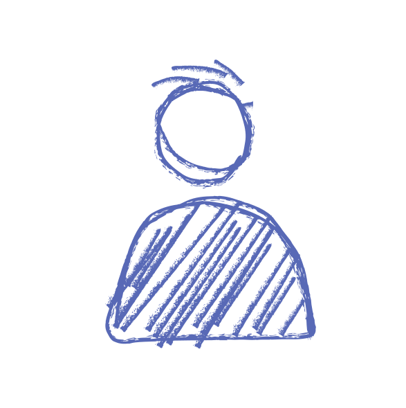
Zwischen Strategie, Idee und Umsetzung.
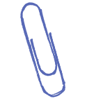
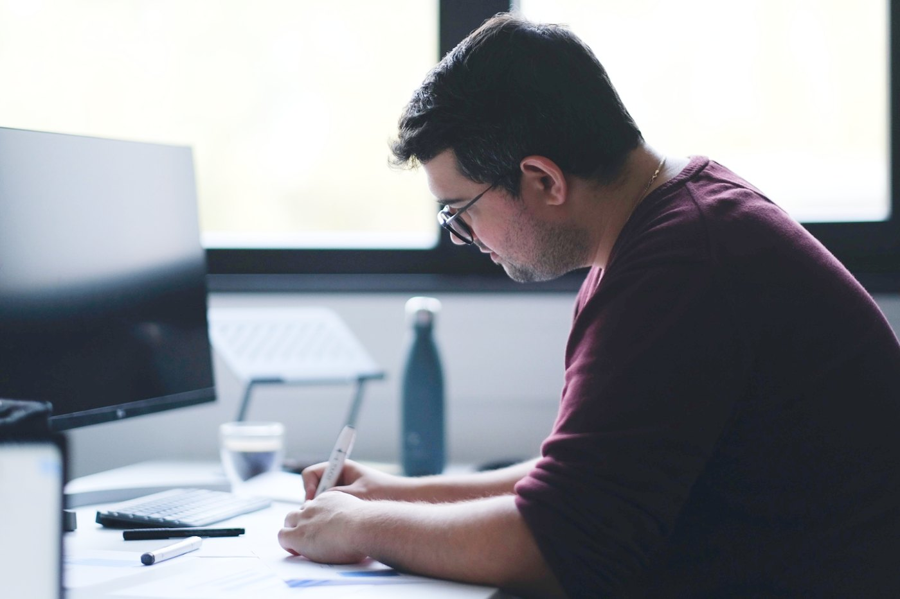
Ich arbeite an der Schnittstelle von Strategie, Konzept und Gestaltung — von Markenidentitäten und Kampagnen über Editorial Design bis zu digitalen Erlebnissen.
Generative KI nutze ich als Werkzeug in diesem Prozess: für Key Visuals und Bildwelten, für Landingpages und Newsletter-Konzepte, und um schneller vom Gedanken zur Umsetzung zu kommen. Art Direction und gestalterische Entscheidungen bleiben bei mir.
Davor steht meistens eine Zeichnung. Sie hilft mir, Ideen direkt zu entwickeln und Formen zu finden, die nicht beliebig oder zusammengesetzt wirken.
Am stärksten wird Gestaltung dort, wo die Disziplinen ineinandergreifen — wenn eine Marke zu einem digitalen Erlebnis wird oder aus einer Skizze ein ganzes System.
Wie ein Projekt bei mir abläuft
Von der Frage zur fertigen Lösung.
Drei Schritte, immer in dieser Reihenfolge. Erst das Problem verstehen, dann die Idee entwickeln — und erst danach gestalten.
-
Briefing
Was soll verstanden werden?
- Problem
- Kontext
- Zielgruppe
- Kommunikation
-
Konzept
Was ist die Idee?
- Erste Ideen
- Form
- Varianten
- Richtung
-
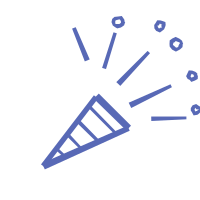
Bauen
Was soll daraus entstehen?
- System
- Typografie
- Raster
- Anwendung
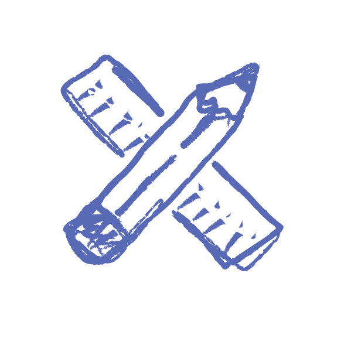
Ausgewählte Arbeiten
Unterschiedliche Aufgaben. Ein gemeinsamer Anspruch: Ideen sichtbar und anwendbar machen.
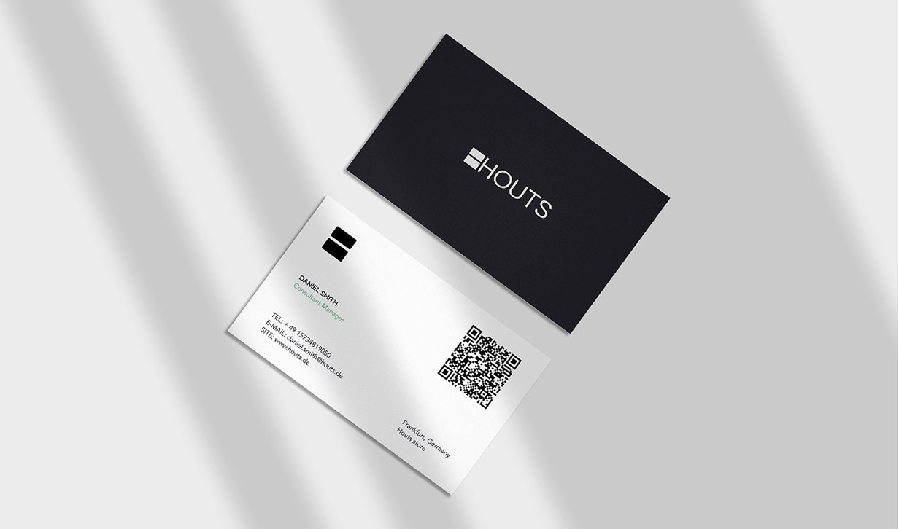
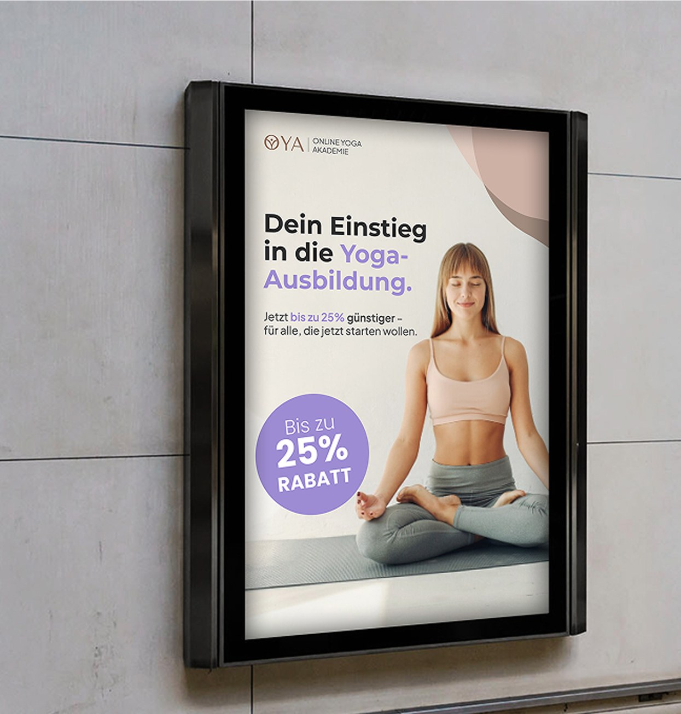
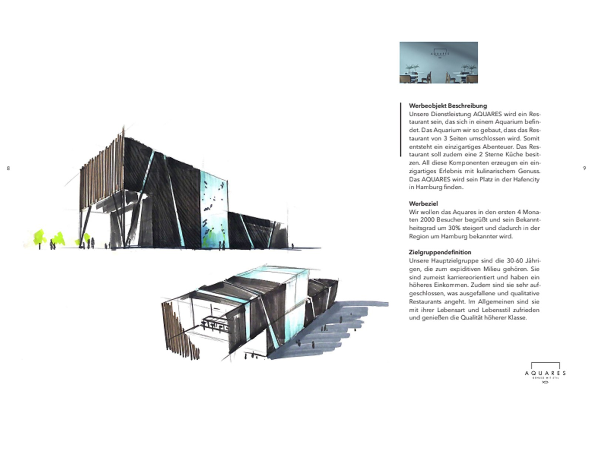
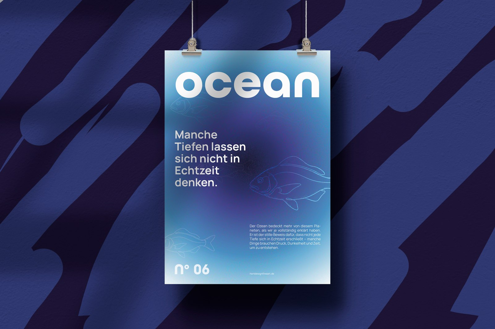
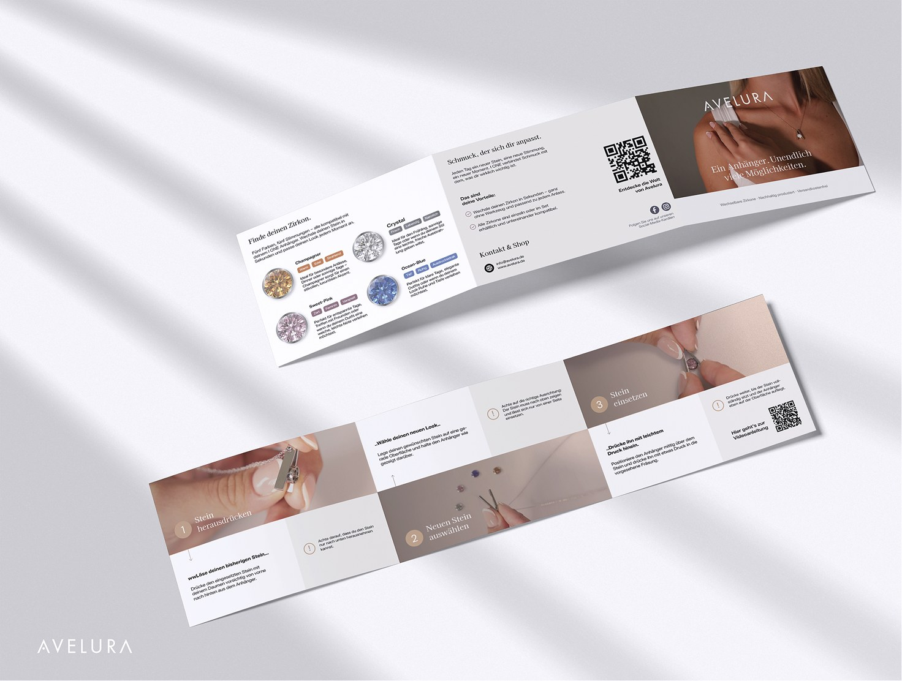
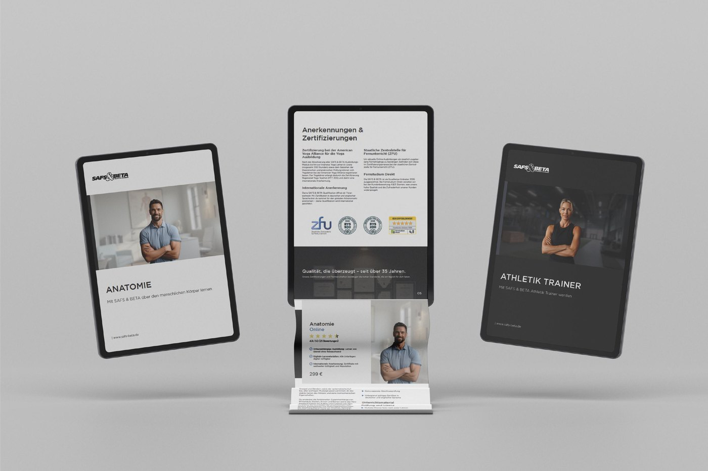
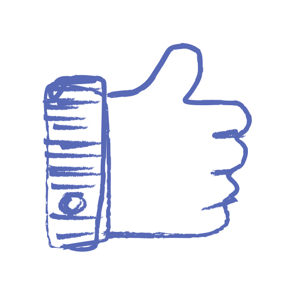
Zusammenarbeit, die bleibt.
Die Zusammenarbeit mit Alexandru war eine großartige Erfahrung. Die Kommunikation war während des gesamten Prozesses klar, schnell und unkompliziert. Das Endergebnis hat meine Erwartungen übertroffen – ich habe ein wunderschön gestaltetes Logo in allen benötigten Formaten erhalten, das genau meinen Vorstellungen entspricht.
Jedes Mal, wenn ich mit Alex arbeite, bin ich begeistert. Er versteht die Anforderung, liefert auf hohem Niveau und macht das ganze Projekt zur Freude. Nicht nur handwerklich perfekt, sondern auch menschlich auf einer Wellenlänge. Das wünsche ich mir von jedem Partner.
Ich arbeite regelmäßig mit Alexandru zusammen und schätze besonders seine kreativen Ideen, seine zuverlässige Umsetzung und die unkomplizierte Kommunikation. Die Zusammenarbeit ist immer professionell und auf Augenhöhe.
Ich fand es stark zu sehen, wie Alex aus einer einfachen Skizze ein komplettes visuelles Konzept entwickelt. Seine Fähigkeit, Zeichnung und Design miteinander zu verbinden, gibt seinen Projekten eine ganz eigene Handschrift.